Lesson 23. Stormwater Conduit Sizing#
Concepts#
Rational Equation (by-hand)
Example Calculations#
Scripts/Spreadsheets#
Conduits convey Flow from one location to another • Pipes • Culverts • Open channels
• Select size, material, and slope • Storm sewer – usually desire to operate with free surface (as an open channel) • Sanitary sewer – similar usually want a free surface • Size (diameter) is dictated by • Flow required • Burial depth relative to drop available A good preliminary design can be obtained using a combination of the rational equation and manning’s equation • Done without regard to downstream boundary conditions • Needs to be checked using a hydraulic model (like SWMM)
• Determine discharge in each pipe. • Size using manning’s equation (… in us customary) • Assumes full, but pipes will have free surface
• Layout of system • Drainage area and Inlets • Pipes • Outfall • elevations
Drainage Area 1.1#
Identify the individual drainage area(s) for analysis
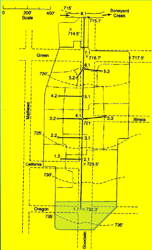
Measure area(s) using appropriate tools; to determine the area of each contributing area, in acres. (G3DATA; PLANIMETER, etc).
Area = 1.50*3.67/2.43 = 2.26 acres (using Acrobat Pro and a conversion ratio 2.43 in^2 => 3.67 acres)
Estimate a runoff coefficient (table look-up)
C = 0.65
Estimate \(T_c\) surface flow to inlet/junction.
Measure actual best-guess flow path(s)
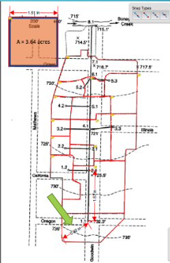Find Slope (737.5 – 732.3)/(0.92*400/1.51) = 5.2ft/243.7 ft = 0.021 (2.1%) from elevation mapping.
Determine some kind of cover.
Apply NRCS Velocity, NRCS Upland, or Kerby-Kirpich.
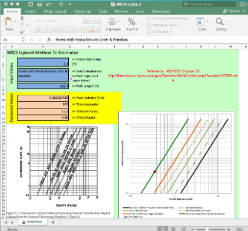Use method that makes most sense consistent with locale.
Repeat for each area.
Estimate \(T_c\) all connecting routes to junction. (Need to measure pipe lengths before this calculation - shown after all the areas in this document)
Drainage Area 1.2#

Measure area(s) using appropriate tools; to determine the area of each contributing area, in acres. (G3DATA; PLANIMETER, etc).
Area = 0.84*3.67/2.43 = 1.26 acres (using Acrobat Pro and a conversion ratio 2.43 in^2 => 3.67 acres)
Estimate a runoff coefficient (table look-up)
C = 0.80
Estimate \(T_c\) surface flow to inlet.
Estimate \(T_c\) all connecting routes to junction.
Drainage Area 2.1#

Measure area(s) using appropriate tools; to determine the area of each contributing area, in acres. (G3DATA; PLANIMETER, etc).
Area = 2.58*3.67/2.43 = 3.89 acres (using Acrobat Pro and a conversion ratio 2.43 in^2 => 3.67 acres)
Estimate a runoff coefficient (table look-up)
C = 0.70
Estimate \(T_c\) surface flow to inlet.
Estimate \(T_c\) all connecting routes to junction.
Drainage Area 2.2#

Measure area(s) using appropriate tools; to determine the area of each contributing area, in acres. (G3DATA; PLANIMETER, etc).
Area = 0.35*3.67/2.43 = 0.53 acres (using Acrobat Pro and a conversion ratio 2.43 in^2 => 3.67 acres)
Estimate a runoff coefficient (table look-up)
C = 0.80
Estimate \(T_c\) surface flow to inlet.
Estimate \(T_c\) all connecting routes to junction.
Drainage Area 3.1#

Measure area(s) using appropriate tools; to determine the area of each contributing area, in acres. (G3DATA; PLANIMETER, etc).
Area = 0.45*3.67/2.43 = 0.68 acres (using Acrobat Pro and a conversion ratio 2.43 in^2 => 3.67 acres)
Estimate a runoff coefficient (table look-up)
C = 0.70
Estimate \(T_c\) surface flow to inlet.
Estimate \(T_c\) all connecting routes to junction.
Drainage Area 3.2#
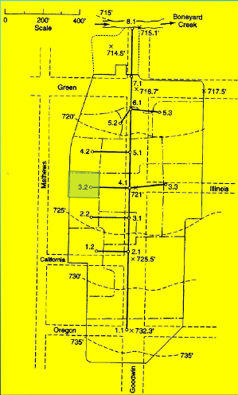
Measure area(s) using appropriate tools; to determine the area of each contributing area, in acres. (G3DATA; PLANIMETER, etc).
Area = 0.30*3.67/2.43 = 0.45 acres (using Acrobat Pro and a conversion ratio 2.43 in^2 => 3.67 acres)
Estimate a runoff coefficient (table look-up)
C = 0.85
Estimate \(T_c\) surface flow to inlet.
Estimate \(T_c\) all connecting routes to junction.
Drainage Area 3.3#

Measure area(s) using appropriate tools; to determine the area of each contributing area, in acres. (G3DATA; PLANIMETER, etc).
Area = 1.05*3.67/2.43 = 1.58 acres (using Acrobat Pro and a conversion ratio 2.43 in^2 => 3.67 acres)
Estimate a runoff coefficient (table look-up)
C = 0.65
Estimate \(T_c\) surface flow to inlet.
Estimate \(T_c\) all connecting routes to junction.
Drainage Area 4.1#
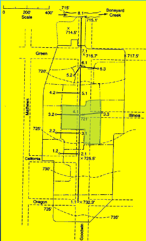
Measure area(s) using appropriate tools; to determine the area of each contributing area, in acres. (G3DATA; PLANIMETER, etc).
Area = 1.33*3.67/2.43 = 2.01 acres (using Acrobat Pro and a conversion ratio 2.43 in^2 => 3.67 acres)
Estimate a runoff coefficient (table look-up)
C = 0.75
Estimate \(T_c\) surface flow to inlet.
Estimate \(T_c\) all connecting routes to junction.
Drainage Area 4.2#
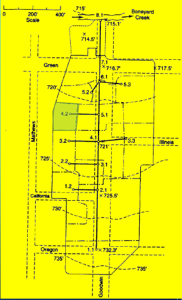
Measure area(s) using appropriate tools; to determine the area of each contributing area, in acres. (G3DATA; PLANIMETER, etc).
Area = 0.44*3.67/2.43 = 0.66 acres (using Acrobat Pro and a conversion ratio 2.43 in^2 => 3.67 acres)
Estimate a runoff coefficient (table look-up)
C = 0.85
Estimate \(T_c\) surface flow to inlet.
Estimate \(T_c\) all connecting routes to junction.
Drainage Area 5.1#

Measure area(s) using appropriate tools; to determine the area of each contributing area, in acres. (G3DATA; PLANIMETER, etc).
Area = 0.78*3.67/2.43 = 1.17 acres (using Acrobat Pro and a conversion ratio 2.43 in^2 => 3.67 acres)
Estimate a runoff coefficient (table look-up)
C = 0.70
Estimate \(T_c\) surface flow to inlet.
Estimate \(T_c\) all connecting routes to junction.
Drainage Area 5.2#

Measure area(s) using appropriate tools; to determine the area of each contributing area, in acres. (G3DATA; PLANIMETER, etc).
Area = 0.44*3.67/2.43 = 0.66 acres (using Acrobat Pro and a conversion ratio 2.43 in^2 => 3.67 acres)
Estimate a runoff coefficient (table look-up)
C = 0.65
Estimate \(T_c\) surface flow to inlet.
Estimate \(T_c\) all connecting routes to junction.
Drainage Area 5.3#

Measure area(s) using appropriate tools; to determine the area of each contributing area, in acres. (G3DATA; PLANIMETER, etc).
Area = 1.16*3.67/2.43 = 1.75 acres (using Acrobat Pro and a conversion ratio 2.43 in^2 => 3.67 acres)
Estimate a runoff coefficient (table look-up)
C = 0.55
Estimate \(T_c\) surface flow to inlet.
Estimate \(T_c\) all connecting routes to junction.
Drainage Area 6.1#
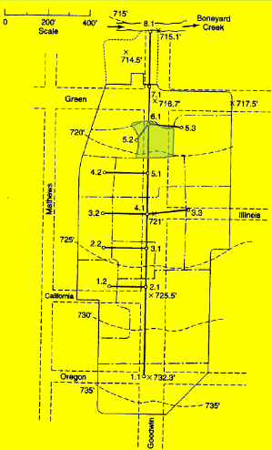
Measure area(s) using appropriate tools; to determine the area of each contributing area, in acres. (G3DATA; PLANIMETER, etc).
Area = 0.36*3.67/2.43 = 0.54 acres (using Acrobat Pro and a conversion ratio 2.43 in^2 => 3.67 acres)
Estimate a runoff coefficient (table look-up)
C = 0.75
Estimate \(T_c\) surface flow to inlet.
Estimate \(T_c\) all connecting routes to junction.
Drainage Area 7.1#
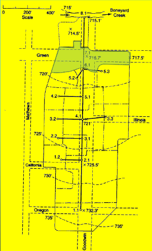
Measure area(s) using appropriate tools; to determine the area of each contributing area, in acres. (G3DATA; PLANIMETER, etc).
Area = 1.44*3.67/2.43 = 2.17 acres (using Acrobat Pro and a conversion ratio 2.43 in^2 => 3.67 acres)
Estimate a runoff coefficient (table look-up)
C = 0.70
Estimate \(T_c\) surface flow to inlet.
Estimate \(T_c\) all connecting routes to junction.
Identify and measure conduit lengths#
Use appropriate tool to measure distances between Node ID (Acrobat Pro in the figure)
Select distance tool
Measure the 400 foot scale
Save scale factor: 1.51 in == 400 feet

Then measure length each pipe, convert to appropriate units.
Pipe P 1.1:

Connects 1.1 to 2.1 (need this linkage later on)
Length = 1.57*400/1.51 = 415 ft
Repeat for all the other pipes, store results somewhere convienient.
Build a spreadsheet with the information
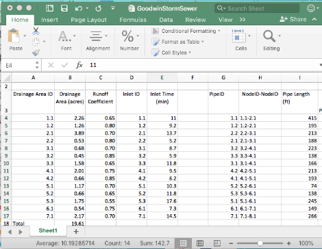
Note the naming convention (a bit awkward above, but faithful to the original example)
Compute Pipe Slopes#
Note
Either during the length measurements or now, record junction elevations, and use these to estimate initial pipe slopes – the pipe slopes and diameters are ultimately the only design controls we can actually engineer – so need a starting point.
Here the 3D nature of the design begins to manifest!
Again employ a suitable tool such as Acrobat Pro, and use the node elevations and topographic map to estimate pipe slopes.
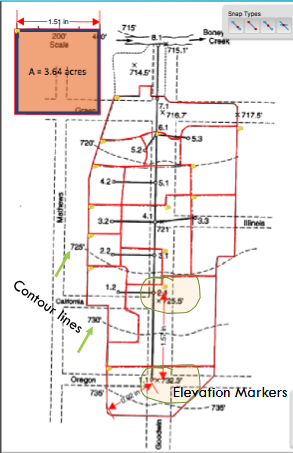
The pipes are usually buried, so we will be able to change slopes somewhat in the plan and profile drawings to maintain suitable hydraulic behavior. Add these slopes to the spreadsheed for each pipe.
Intensity (as an) Equation#
Next we will need to precipitation information for the design.
Easiest for this example is to build an IDF curve for the location.
The basin in the example is in Urbana, Illinois – Use NOAA Atlas 14

For the example use a 2-yr ARI
Download the table
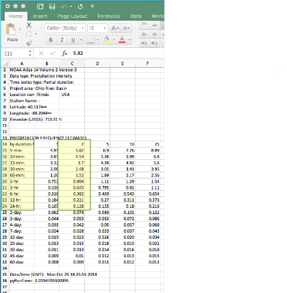Use the 2-nd column
Use solver to fit
\(I = \frac{B}{(T_c + D)^E}\)These E,B,D are unknowns, we are fitting the equation to the NOAA values and \(T_c\) (as a variable) to recover a model (which we call an IDF curve)

Use this equation for estimating intensity and runoff
Intensity function for the example is:
\(I = \frac{54.82}{(T_c + 9.21)^{0.884}}\)
This equation can be coded into an analysis spreadsheet directly, then used to size the pipes.